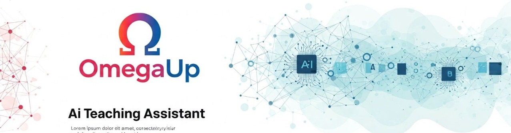

Unlocking Open Source: My GSoC Adventure Begins
Google Summer of Code '25 has presented me with an incredible opportunity to dive into the exciting world of open source. I'm thrilled to have been selected by the omegaUp organization to build an AI Teaching Assistant for their platform, a project I believe will significantly benefit both students and teachers. While GSoC provided this amazing gateway, my initial introduction to the vast possibilities of open source came through my truly inspirational friend, Aritra. His passion and insights sparked my interest and set me on this path. Now, I'm fortunate to have him as my mentor for this GSoC project. Aritra, a two-time GSoC participant now serving as a mentor, has been an invaluable guide. It was his encouragement that ultimately led me to explore and now be a part of the GSoC program. As a first-time participant, I'm deeply grateful for this chance to contribute and learn.
A little bit about Myself:
Hey everyone! I'm Nandini, almost officially a Data Science postgrad from CMI (after a Statistics undergrad at Bethune College - who knew!). Seriously never thought I'd be here, but hey, passion for stats, data, ML, and AI can take you places! I love diving into new things. My recent work involved two impactful internships at Coriolis Technologies, focused on automated Web UI testing leveraging AI/ML. The first internship centered on developing a proof-of-concept for a Web UI automation model. Subsequently, I contributed to the productization of this model during my second internship. Further details regarding this work can be found in my dedicated blog post
here.
Beyond the world of coding and analysis, my time is filled with dancing, singing, playing guitar, rewatching Studio Ghibli films, binge-watching sitcoms, or getting lost in Disney movies. Plus, I'm a total Swiftie! Apparently, my happy place is delightfully "delusional".
If you want to know me better, you might want to visit my
LinkedIn profile,
GitHub profile
or go through my portfolio.
Stay tuned for my take on this awesome experience!
My Introduction to omegaUp:
Applying to GSoC was never on my radar; honestly, I didn't think I was even qualified. It was only last year, through my friend Aritra, that GSoC even came to my attention. While the idea sounded fantastic, as a statistics student, open source contribution and GitHub were completely new territories. Then, around September, I stumbled upon the AI Teaching Assistant project. Intrigued, I reached out to OmegaUp immediately. They asked for a prototype proposal, which I dove into. After a month of discussions and revisions, the prototype proposal was approved, and the coding began – a fascinating blend of in-depth development and leveraging my prompting skills, made even better by collaborating with Aritra. It wasn't until the end of January, after our prototype was well-received by the OmegaUp team, that they decided to apply to GSoC with the AI Teaching Assistant as a project and encouraged me to apply too. So, my first foray into open source actually predated my GSoC application! Heeding my mentors' advice, I applied, and through consistent contributions and successful test rounds, here I am, selected for GSoC '25.

Pre-GSoC period:
When I decided to apply for GSoC this year, my heart was already set on one organization: omegaUp. While HumanAI's project also caught my attention and involved an assignment, juggling it with my college workload and omegaUp's requirements became a bit overwhelming. Ultimately, I decided to focus my energy and application solely on omegaUp. After going through the selection criteria of omegaUp, I was a bit amazed as it required the candidates to attend a programming contest first. An applicant needed to solve 2 out of 3 problems to be eligible for further rounds.
- Round 1: Solve 2 out of 3 in a programming contest :3
- Round 2: A Merged PR.
- Round 3: Writing a (good) proposal.
- Round 4: Interview
An overview of my project:
So, what is omegaUp?
omegaUp is a non-profit organization (501c3) aimed to increase
the number of talented Software Engineers in Latin America.
OmegaUp had 6 projects related to the online judge of OmegaUp.
Among those, I chose the
AI Teaching Assistant
project as I personally had built the prototype for it and would have loved to integrate the AI Teaching Assistant to omegaUp's website. You
can find the official announcement
here. Also,
here
is the proposal that I submitted and will use throughout the
project.
My Google Summer of Code '25 project with OmegaUp is focused on developing an AI Teaching Assistant – a smart bot designed to revolutionize how students receive help and how teachers manage feedback. Imagine a scenario where students submit their code and, even if they're stuck or just need a hint, they can get instant, intelligent feedback without waiting for a teacher to manually review every line. That's the core idea!
This AI TA will be capable of handling a variety of queries: from explaining complex topics like "binary search," providing hints without revealing solutions, to pinpointing logical or syntactical errors in submitted code. It will proactively identify struggling students and offer assistance, significantly easing the burden on teachers. Teachers will also have the flexibility to review AI-generated feedback before it's sent to students, or even enable full automation.
Technically, the project involves a robust Python script leveraging powerful Large Language Models (currently GPT-4o, with plans to explore more cost-effective and accurate open-source alternatives like Deepseek). We're integrating this with the OmegaUp platform using RabbitMQ for seamless, instantaneous feedback processing. My work will focus on enhancing the existing prototype's robustness, optimizing its performance (aiming for intelligent detection of struggling students and improved time complexity), and ultimately building a user-friendly interface for teachers. This AI Teaching Assistant isn't just about automation; it's about making learning more accessible and efficient for everyone on OmegaUp.

Thanksgiving:
All of these wouldn't be possible without the support of my parents,
friends and teachers. Thanks to Aritra for never letting me lose my
hope. I'm thankful to them.
I am immensely grateful to Juan and Hugo for such good mentoring. With every
comment and suggestion of them in my PRs, I have learnt a lot. They
assigned me some of the issues which gave me an in-depth
understanding of the codebase.
I would also like to thank Carlos and Vanessa for reviewing and
merging my PRs. Lastly, I would like to thank all the mentors and
applicants of the omegaUp organization for their constant support.
Ready for a little piece of my soul? Tap the picture below and let the music do the talking!